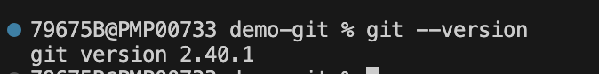
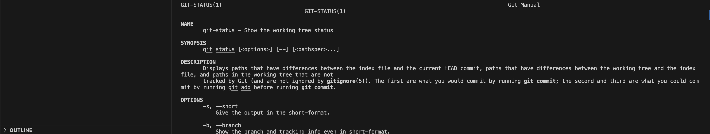

Configurer git
Installer git
Afin de vérifier si git est installé, il faut exécuter la commande suivante :

Si git est installé, la commande affiche la version de git. Sinon, il faut installer git. Pour cela, il suffit de suivre les instructions du site officiel.
Configurer son nom et son email
Avant de commencer à utiliser git, il faut configurer son nom et son email. C'est ce nom et cet email qui seront utilisés pour les commits et qui permettront d'identifier les auteurs des modifications.
On passe ici le flag --global, pour dire à Git que l’on définit la configuration globale pour l’utilisateur courant. Si vous souhaitez définir une configuration spécifique à un projet, il suffit de ne pas passer le flag --global et de vous placer dans le dossier du projet.
Configurer le proxy
Si vous êtes derrière un proxy, il faut configurer git pour qu'il utilise le proxy. Pour cela, il faut exécuter la commande suivante :
Par exemple, si le proxy est
et le port il faut exécuter la commande suivante :Configurer son éditeur de texte
Il est possible de configurer son éditeur de texte. Par défaut, git utilise vim. Il est possible de configurer git pour qu'il utilise un autre éditeur de texte. Par exemple, pour utiliser Visual Studio Code, il faut exécuter la commande suivante :
Consulter la configuration
Cela vous permettra de connaître la stratégie utilisée par Git pour la gestion des mots de passe, le paramètre s’appelle credential.helper. Sur un poste Windows, vous verrez peut-être wincred, qui est un utilitaire qui permet de stocker les mots de passe dans le gestionnaire de mots de passe de Windows.
Il est possible de voir la configuration du dépôt en exécutant la commande suivante :
L'aide de git
Il est possible d'obtenir de l'aide sur une commande git en exécutant la commande suivante :
Par exemple, pour obtenir de l'aide sur la commande status, il faut exécuter la commande suivante :

La commande help affiche les informations suivantes :
- NAME : le nom de la commande
- SYNOPSIS : la syntaxe de la commande
- DESCRIPTION : la description de la commande
- OPTIONS : les options de la commande
- EXAMPLES : des exemples d'utilisation de la commande
- SEE ALSO : les commandes similaires
Les commandes git sont organisées en groupes. Il est possible d'obtenir la liste des groupes en exécutant la commande suivante :
Créer un alias
Il est possible de créer un alias pour une commande git. Ceci permet de raccourcir les commandes les plus utilisées. Par exemple, pour créer un alias pour la commande status, il faut exécuter la commande suivante :
Il sera alors possible d'utiliser la commande suivante :